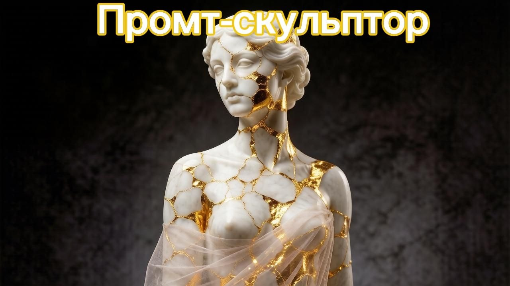

Промт-скульптор: как заставить ИИ выдавать премиальный объём вместо плоских картинок

Ребята, всем привет! Короче, давно замечал: кидаешь нейросети обычный промт — что-то там «красивое», «детализированное» — а на выходе плоская картинка, как будто её на принтере распечатали. И вот наткнулся на штуку, которая реально всё меняет — назвал её для себя «текстурный переворот».
Больше полезного про нейросети — простым языком, каждый день в нашей группе ВКонтакте
Перейти во ВКонтакте →Смысл в чём: убираем из запроса все эти абстрактные слова типа «красивый» и «стильный» — нейросеть их и так толком не понимает — и вместо этого описываем материал напрямую. Гипс, мрамор, потрескавшаяся позолота. ИИ тут же начинает мыслить не «красиво или нет», а физикой — как ведёт себя материал, где трескается, где блестит.
Вот промт, который я использовал для обложки к этому посту (вставляйте в Midjourney, Шедеврум или ГигаЧат):
«A breathtaking fine art photography of a minimalist marble statue, [вставь объект, например: half-body bust sculpture of a beautiful woman]. The sculpture is artistically fragmented with deep cracks filled with shimmering liquid gold leaf and fine veins of glowing gold foil. The background is a solid, clean, dark charcoal gray studio backdrop with deep shadows. High contrast, soft studio side lighting. No text, no words, aspect ratio 16:9.»
Как увидел результат — я аж прям не поверил, что это тот же самый инструмент, который до этого выдавал мне плоские картинки. Если среди вас есть дизайнеры, художники или просто те, кто балуется генерацией картинок для соцсетей — забирайте промт, вставляйте свой объект в скобки и пробуйте. Реально другой уровень.
Ещё по теме
Промт-опрос: как получить от ИИ идеальный результат, если сам не знаешь, чего хочешь
Промт-Диджей: как заставить ИИ управлять звуком с помощью скрытых команд